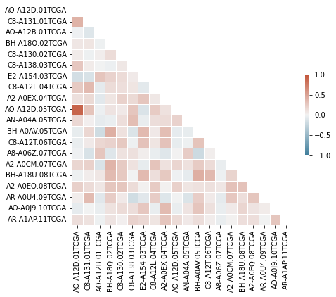
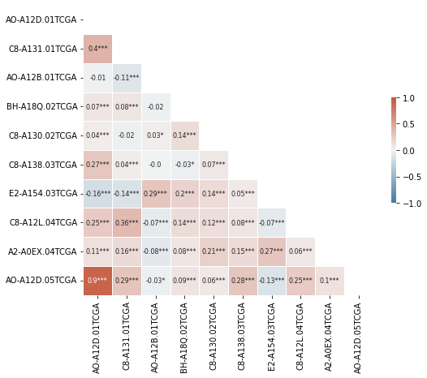
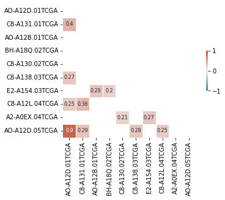

import numpy as np
import pandas as pd
import seaborn as sns
from scipy.stats import pearsonr
import matplotlib.pyplot as plt
cmap = sns.diverging_palette(230, 20, as_cmap=True)Correlation heatmaps
using gene expression data
ge = pd.read_csv('data/breast_cancer/77_cancer_proteomes_CPTAC_itraq.csv')
ge = ge.drop(['gene_symbol', 'gene_name'], axis=1)
ge = ge.set_index('RefSeq_accession_number')
ge = ge.dropna()
ge| AO-A12D.01TCGA | C8-A131.01TCGA | AO-A12B.01TCGA | BH-A18Q.02TCGA | C8-A130.02TCGA | C8-A138.03TCGA | E2-A154.03TCGA | C8-A12L.04TCGA | A2-A0EX.04TCGA | AO-A12D.05TCGA | ... | AO-A12B.34TCGA | A2-A0SW.35TCGA | AO-A0JL.35TCGA | BH-A0BV.35TCGA | A2-A0YM.36TCGA | BH-A0C7.36TCGA | A2-A0SX.36TCGA | 263d3f-I.CPTAC | blcdb9-I.CPTAC | c4155b-C.CPTAC | |
|---|---|---|---|---|---|---|---|---|---|---|---|---|---|---|---|---|---|---|---|---|---|
| RefSeq_accession_number | |||||||||||||||||||||
| NP_958782 | 1.096131 | 2.609943 | -0.659828 | 0.195341 | -0.494060 | 2.765081 | 0.862659 | 1.407570 | 1.185108 | 1.100688 | ... | -0.963904 | -0.487772 | -0.106680 | -0.065838 | 0.655850 | -0.552212 | -0.398560 | 0.598585 | -0.191285 | 0.566975 |
| NP_958785 | 1.111370 | 2.650422 | -0.648742 | 0.215413 | -0.503899 | 2.779709 | 0.870186 | 1.407570 | 1.192612 | 1.100688 | ... | -0.938210 | -0.487772 | -0.106680 | -0.055893 | 0.658143 | -0.547749 | -0.392601 | 0.606697 | -0.183918 | 0.578702 |
| NP_958786 | 1.111370 | 2.650422 | -0.654285 | 0.215413 | -0.500619 | 2.779709 | 0.870186 | 1.410312 | 1.188860 | 1.100688 | ... | -0.943919 | -0.487772 | -0.106680 | -0.065838 | 0.655850 | -0.552212 | -0.392601 | 0.603993 | -0.186022 | 0.576747 |
| NP_000436 | 1.107561 | 2.646374 | -0.632113 | 0.205377 | -0.510459 | 2.797995 | 0.866423 | 1.407570 | 1.185108 | 1.100688 | ... | -0.935355 | -0.487772 | -0.106680 | -0.055893 | 0.655850 | -0.552212 | -0.392601 | 0.603993 | -0.186022 | 0.576747 |
| NP_958781 | 1.115180 | 2.646374 | -0.640428 | 0.215413 | -0.503899 | 2.787023 | 0.870186 | 1.413053 | 1.200116 | 1.093358 | ... | -0.935355 | -0.503853 | -0.106680 | -0.062523 | 0.651264 | -0.556675 | -0.395581 | 0.603993 | -0.167079 | 0.576747 |
| ... | ... | ... | ... | ... | ... | ... | ... | ... | ... | ... | ... | ... | ... | ... | ... | ... | ... | ... | ... | ... | ... |
| XP_003846524 | 2.654339 | 0.715535 | 0.160528 | -8.716757 | 0.388225 | 1.496053 | -3.694801 | -0.870670 | -0.743348 | 3.383894 | ... | 1.300058 | -4.105941 | -3.620036 | -2.598691 | -2.462510 | -5.083982 | -4.792895 | 0.641854 | -2.257159 | -0.720976 |
| NP_443073 | -0.119194 | 1.144610 | -1.203037 | 1.700762 | 0.371826 | -1.718572 | 0.873949 | -0.851479 | 0.787411 | 1.617433 | ... | -1.377869 | 0.821200 | 1.494581 | 3.259359 | -0.109983 | -2.698723 | -0.294287 | 0.420100 | 0.226521 | -0.537262 |
| NP_001004456 | -2.024094 | -0.166903 | -3.071010 | 2.353112 | -1.445222 | 0.197769 | 4.618518 | 1.914760 | 3.158587 | -2.820708 | ... | -2.785351 | 1.203922 | -0.269946 | 1.233740 | 1.894022 | -1.556297 | 0.724603 | 0.847382 | 0.520142 | 0.948084 |
| NP_997625 | 1.637123 | 1.059605 | 1.648810 | 0.422827 | 0.493181 | -2.354914 | 0.636856 | 0.763303 | 2.948483 | 2.390718 | ... | 2.150828 | -1.352917 | -0.605897 | 0.849171 | 1.135068 | -1.978013 | -1.745163 | -1.099726 | -0.592251 | -0.595894 |
| NP_003270 | -0.252537 | 2.193011 | -2.813263 | 0.389373 | 2.369266 | -0.354459 | -0.488396 | 0.415124 | 2.025525 | -0.662108 | ... | -2.885274 | 0.332346 | 0.741047 | 1.853693 | 2.325089 | -3.999570 | 1.222131 | -0.453395 | -4.235684 | -2.452576 |
7994 rows × 83 columns
pd.df.corr(): Compute pairwise correlation of columns. (doc)
scipy.stats.pearsonr(): Pearson correlation coefficient and p-value for testing non-correlation. [1] returns the pval for the corr. (doc)
np.eye(): Return a 2-D array with ones on the diagonal and zeros elsewhere.
pd.df.applymap(): Apply a function to a Dataframe elementwise. (doc)
- get the pairwise corr between columns
- get pairwise p-val of corr between columns,
-np.eye()to set self corr p-vals to 0 - get the p-vals with significance for every cell of df
- get the annotation df by combining corr + p-val
corr_df = ge.corr()
pval = ge.corr(method=lambda x, y: pearsonr(x, y)[1]) - np.eye(*corr_df.shape)
p = pval.applymap(lambda x: ''.join(['*' for t in [.05, .01, .001] if x<=t]))
annot_df = corr_df.round(2).astype(str) + pmask = np.triu(np.ones_like(corr_df.iloc[:20, :20], dtype=bool))
plt.figure(figsize=(7, 7))
sns.heatmap(corr_df.iloc[:20, :20], mask=mask,
cmap=cmap, center=0, fmt='s',
square=True, linewidths=0.5,
cbar_kws={"shrink": .3},
annot_kws={"fontsize":8},
vmin=-1, vmax=1)
plt.xlabel('');
# plt.savefig(fname='grouped_corr.jpg', bbox_inches='tight', dpi=300)
Can choose only a few columns to visualize:
target_genes = ['AO-A12D.01TCGA', 'C8-A131.01TCGA', 'AO-A12B.01TCGA',
'BH-A18Q.02TCGA', 'C8-A130.02TCGA', 'C8-A138.03TCGA',
'E2-A154.03TCGA', 'C8-A12L.04TCGA', 'A2-A0EX.04TCGA',
'AO-A12D.05TCGA']
smol_corr_df = corr_df.loc[target_genes, target_genes]
smol_annot_df = annot_df.loc[target_genes, target_genes]
mask = np.triu(np.ones_like(smol_corr_df, dtype=bool))
plt.figure(figsize=(8,8))
sns.heatmap(smol_corr_df, annot=smol_annot_df, mask=mask,
cmap=cmap, center=0, fmt='s',
square=True, linewidths=0.5,
cbar_kws={"shrink": .3},
annot_kws={"fontsize":8},
vmin=-1, vmax=1)
plt.xlabel('');
# plt.savefig(fname='grouped_corr.jpg', bbox_inches='tight', dpi=300)
The above can look too crowded and cluttered; so a filter for absolute corr value makes for a claner looking plot.
smol_corr_df = corr_df.loc[target_genes, target_genes]
smol_annot_df = annot_df.loc[target_genes, target_genes]
corr_th = 0.2
smol_corr_df_ = smol_corr_df[np.abs(smol_corr_df) >= corr_th]
smol_annot_df_ = smol_corr_df_.round(2).fillna('').astype(str)
mask = np.triu(np.ones_like(smol_corr_df_, dtype=bool))
sns.heatmap(smol_corr_df_, annot=smol_annot_df_, mask=mask,
cmap=cmap, center=0, fmt='s',
square=True, linewidths=0.5,
cbar_kws={"shrink": .3},
annot_kws={"fontsize":8},
vmin=-1, vmax=1)
plt.xlabel('')
# plt.savefig(fname='grouped_corr.jpg', bbox_inches='tight', dpi=300)Text(0.5, 15.0, '')
Questions:
- How does pd implement the pair-wise correlation of columns?